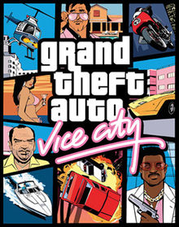
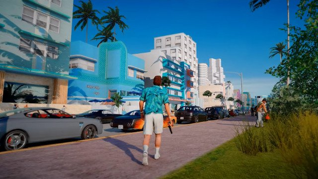

Grand Theft Auto: Vice City is a 2002 action-adventure game developed by Rockstar North and published by Rockstar Games as part of the Grand Theft Auto series. Set in 1986 within the fictional Vice City, based on Miami, the game follows the exploits of mobster Tommy Vercetti after his release from prison. Upon being caught up in an ambushed drug deal, he seeks out those responsible while slowly building a criminal empire and seizing power from other criminal organisations in the city. |
 |
|---|---|
|  | Grand Theft Auto: Vice City is an action-adventure game played from a third-person perspective. The player controls criminal Tommy Vercetti and completes missions—linear scenarios with set objectives—to progress through the story. It is possible to have several active missions running at one time, as some missions require the player to wait for further instructions or events. Outside of missions, the player can freely roam the game's open world and has the ability to complete optional side missions. Composed of two main islands and several smaller areas, the world is much larger in area than earlier entries in the series.The islands are unlocked for the player as the story progresses. |
In 1986, mobster Tommy Vercetti (voiced by Ray Liotta) is released from prison after serving a fifteen-year sentence for murder. His boss Sonny Forelli (Tom Sizemore), seeking to establish drug operations in the south, sends Tommy to Vice City following his release, to oversee an important drug deal alongside crooked lawyer Ken Rosenberg (William Fichtner). However, the deal is ambushed by unknown assailants, with Tommy and Ken barely escaping it. Angered upon hearing the news, Sonny orders Tommy to recover the drugs, alongside the money he gave to him, under threat of consequences. Seeking information, Ken points Tommy towards Colonel Juan Garcia Cortez (Robert Davi), who helped set up the exchange. Expressing regret for the ambush, Cortez promises to find out who masterminded it.